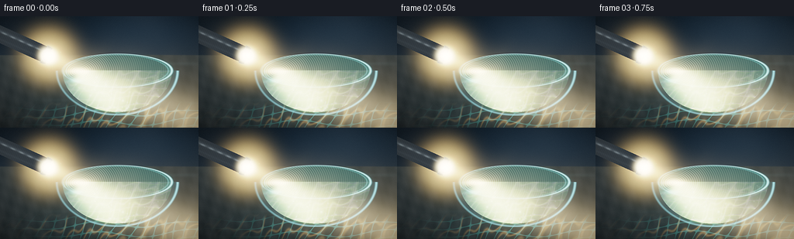
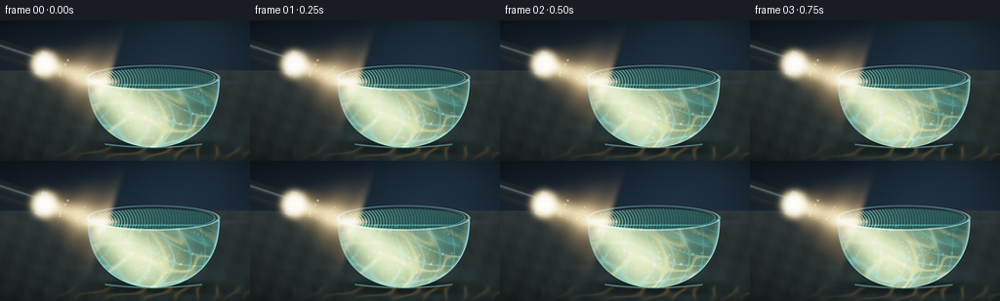
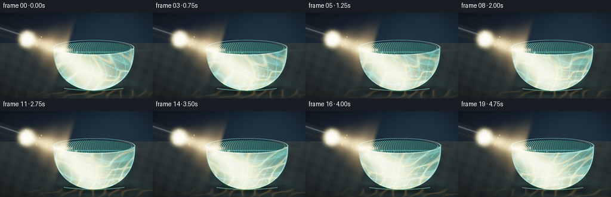
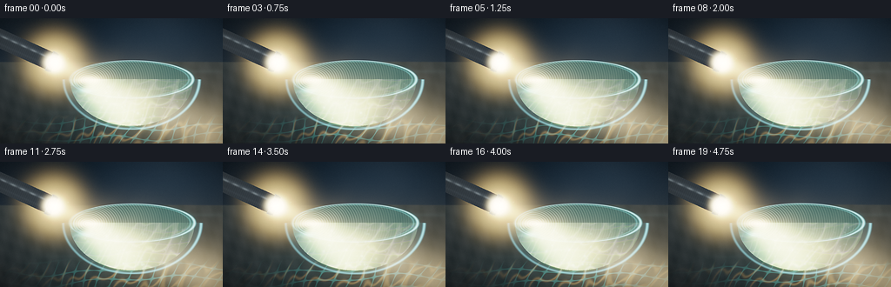
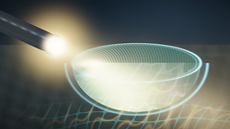
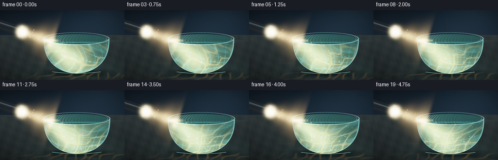
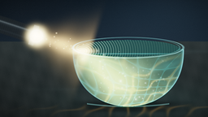
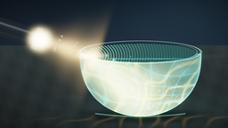
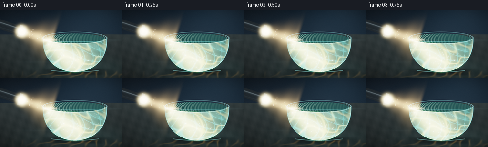

CODING AGENTS AS PIXEL WORLD MODELS
traex/DeepSeek-V4.1-Flash · phygen_047
点击播放 · 原生 RGB 像素
逐轮保存的候选
回放视频、检查图与代码变化。
每份候选均可单独播放。实际图片检查记录在下方工具轨迹中。
候选 01播放与检查图
点击播放 · 原生 RGB 像素


展开代码变化
--- 上一保存版本
+++ 本次保存版本
@@ -0,0 +1,479 @@
+"""Procedural RGB render: flashlight beam scattering through a murky water bowl."""
+
+from pathlib import Path
+
+import numpy as np
+from PIL import Image, ImageFilter
+from scipy.ndimage import gaussian_filter
+
+import artifact_io
+
+
+WIDTH = 256
+HEIGHT = 144
+FPS = 4.0
+FRAMES = 20
+SS = 3
+
+OUT_W = WIDTH * SS
+OUT_H = HEIGHT * SS
+
+BOWL_X = 151.0
+BOWL_Y = 70.0
+BOWL_RX = 78.0
+BOWL_RY = 57.0
+WATER_RX = 70.5
+WATER_RY = 21.5
+
+LENS = np.array([62.0, 51.0], dtype=np.float64)
+BEAM_DIR = np.array([0.911, 0.412], dtype=np.float64)
+BEAM_DIR /= np.linalg.norm(BEAM_DIR)
+BEAM_PERP = np.array([-BEAM_DIR[1], BEAM_DIR[0]], dtype=np.float64)
+
+
+def smoothstep(edge0, edge1, value):
+ t = np.clip((value - edge0) / (edge1 - edge0), 0.0, 1.0)
+ return t * t * (3.0 - 2.0 * t)
+
+
+def soft_ellipse(x, y, cx, cy, rx, ry):
+ return ((x - cx) / rx) ** 2 + ((y - cy) / ry) ** 2
+
+
+def add_glow(image, x, y, sigma, color, strength):
+ """Add one small antialiased Gaussian light to the supersampled image."""
+ radius = max(2, int(np.ceil(sigma * 3.2)))
+ cx = int(round(x * SS))
+ cy = int(round(y * SS))
+ sx0, sx1 = max(0, cx - radius), min(OUT_W, cx + radius + 1)
+ sy0, sy1 = max(0, cy - radius), min(OUT_H, cy + radius + 1)
+ if sx0 >= sx1 or sy0 >= sy1:
+ return
+ yy, xx = np.mgrid[sy0:sy1, sx0:sx1]
+ r2 = (xx - x * SS) ** 2 + (yy - y * SS) ** 2
+ amount = np.exp(-0.5 * r2 / (sigma * SS) ** 2) * strength
+ image[sy0:sy1, sx0:sx1] += amount[..., None] * np.asarray(color)
+
+
+def make_particles():
+ rng = np.random.default_rng(47017)
+ particles = []
+ while len(particles) < 112:
+ x = rng.uniform(-0.94, 0.94)
+ y = rng.uniform(0.04, 0.98)
+ if x * x + y * y > 0.90:
+ continue
+ particles.append(
+ {
+ "x": BOWL_X + x * (WATER_RX - 4.0),
+ "y": BOWL_Y + 3.0 + y * (BOWL_RY - 8.0),
+ "phase": rng.uniform(0.0, 2.0 * np.pi),
+ "speed": rng.uniform(0.35, 0.95),
+ "size": rng.uniform(0.38, 1.18),
+ "bright": rng.uniform(0.12, 0.72),
+ "tone": rng.uniform(-0.2, 0.28),
+ }
+ )
+ return particles
+
+
+PARTICLES = make_particles()
+
+
+def background(x, y, t):
+ """Dark studio wall and stone tabletop before any glass or lighting."""
+ rgb = np.zeros((OUT_H, OUT_W, 3), dtype=np.float32)
+
+ wall_grad = np.clip((y - 4.0) / 61.0, 0.0, 1.0)
+ wall = np.stack(
+ [
+ 0.006 + 0.010 * wall_grad,
+ 0.012 + 0.015 * wall_grad,
+ 0.018 + 0.020 * wall_grad,
+ ],
+ axis=-1,
+ )
+ wall_tex = (
+ np.sin(0.043 * x + 0.021 * y)
+ + 0.65 * np.sin(-0.031 * x + 0.057 * y + 1.7)
+ + 0.35 * np.sin(0.109 * x - 0.077 * y + 0.3)
+ )
+ wall += (wall_tex * 0.0014)[..., None]
+ # A very soft, cool studio falloff keeps the upper frame from going flat.
+ wall_glow = np.exp(-((x - 191.0) / 91.0) ** 2 - ((y - 16.0) / 48.0) ** 2)
+ wall += wall_glow[..., None] * np.array([0.008, 0.015, 0.022], dtype=np.float32)
+
+ table_grad = np.clip((y - 50.0) / 94.0, 0.0, 1.0)
+ stone = np.stack(
+ [
+ 0.035 - 0.018 * table_grad,
+ 0.043 - 0.023 * table_grad,
+ 0.045 - 0.024 * table_grad,
+ ],
+ axis=-1,
+ )
+ grain = (
+ np.sin(0.31 * x + 0.07 * y)
+ + 0.62 * np.sin(-0.17 * x + 0.39 * y + 0.8)
+ + 0.31 * np.sin(0.73 * x - 0.21 * y + 2.1)
+ )
+ stone += (grain * 0.0025)[..., None]
+ table_pool = np.exp(
+ -((x - 160.0) / 105.0) ** 2 - ((y - 120.0) / 30.0) ** 2
+ )
+ stone += table_pool[..., None] * np.array([0.010, 0.021, 0.021], dtype=np.float32)
+
+ horizon = 50.0 + 0.25 * np.sin(x * 0.025)
+ table_mask = smoothstep(horizon - 0.9, horizon + 0.9, y)
+ rgb[:] = wall * (1.0 - table_mask[..., None]) + stone * table_mask[..., None]
+
+ # Faint reflected glints on the polished table.
+ glint = (
+ np.exp(-((x - 226.0) / 32.0) ** 2 - ((y - 61.0) / 2.2) ** 2)
+ + 0.45 * np.exp(-((x - 95.0) / 45.0) ** 2 - ((y - 108.0) / 2.0) ** 2)
+ )
+ rgb += (glint * 0.012)[..., None] * np.array([0.45, 0.75, 0.82], dtype=np.float32)
+ return rgb
+
+
+def table_caustics(x, y, t):
+ """Refracted light webs on the table beneath and beside the bowl."""
+ pool = np.exp(
+ -((x - 177.0) / 83.0) ** 2 - ((y - 126.0) / 18.0) ** 2
+ )
+ pool *= smoothstep(108.0, 122.0, y)
+
+ p1 = (
+ 0.105 * x
+ + 0.16 * y
+ + 0.62 * np.sin(0.058 * x - 0.045 * y + 0.55 * t)
+ + 0.25 * t
+ )
+ p2 = (
+ -0.13 * x
+ + 0.09 * y
+ + 0.72 * np.sin(0.079 * y + 0.035 * x - 0.7 * t)
+ )
+ web = np.sin(p1) + 0.66 * np.sin(p2) + 0.34 * np.sin(1.9 * p1 - 1.3 * p2)
+ ridge = np.exp(-((web / 0.31) ** 2))
+ fine = np.exp(-((np.sin(2.3 * p1 + 1.1) + np.sin(1.7 * p2 - 0.4)) / 0.24) ** 2)
+
+ warm = ridge[..., None] * np.array([0.28, 0.18, 0.065], dtype=np.float32)
+ cool = fine[..., None] * np.array([0.055, 0.25, 0.23], dtype=np.float32)
+ return pool[..., None] * (warm + cool) * 0.62
+
+
+def flashlight_and_air_beam(rgb, x, y, t):
+ """Metal flashlight entering from frame left, plus its airborne cone."""
+ dx = x - LENS[0]
+ dy = y - LENS[1]
+ along = dx * BEAM_DIR[0] + dy * BEAM_DIR[1]
+ across = dx * BEAM_PERP[0] + dy * BEAM_PERP[1]
+
+ # The concentrated cone is brightest on axis and widens with distance.
+ cone_width = 4.1 + 0.070 * np.maximum(along, 0.0)
+ core = np.exp(-0.5 * (across / cone_width) ** 2)
+ halo = np.exp(-0.5 * (across / (cone_width * 2.55)) ** 2)
+ cone = (core * 0.55 + halo * 0.19) * smoothstep(-1.0, 9.0, along)
+ cone *= 1.0 / (1.0 + 0.0045 * np.maximum(along, 0.0))
+ haze = 0.92 + 0.08 * np.sin(0.14 * along - 2.0 * t + 0.7 * np.sin(0.09 * along))
+ air_color = np.array([1.00, 0.80, 0.48], dtype=np.float32)
+ air = cone * haze
+ rgb += air[..., None] * air_color * 0.72
+
+ # Optical bloom around the lens.
+ lens_dist = np.sqrt((x - LENS[0]) ** 2 + (y - LENS[1]) ** 2)
+ lens_glow = np.exp(-0.5 * (lens_dist / 18.0) ** 2)
+ rgb += lens_glow[..., None] * np.array([0.75, 0.55, 0.24], dtype=np.float32)
+
+ # Flashlight barrel, seen at a diagonal angle.
+ behind = -along
+ body = (behind >= 5.0) & (behind <= 98.0) & (np.abs(across) <= 10.7)
+ collar = (behind >= 1.0) & (behind < 6.2) & (np.abs(across) <= 12.0)
+ head = (behind >= -1.0) & (behind < 5.2) & (np.abs(across) <= 11.2)
+
+ body_shade = 0.72 + 0.26 * np.exp(-((across + 4.1) / 2.0) ** 2)
+ body_shade += 0.10 * np.exp(-((across - 5.8) / 1.2) ** 2)
+ rings = 0.90 + 0.10 * np.sin(behind * 1.37) ** 2
+ metal = np.stack(
+ [
+ 0.050 * body_shade,
+ 0.061 * body_shade,
+ 0.070 * body_shade,
+ ],
+ axis=-1,
+ ) * rings[..., None]
+ metal += (
+ np.exp(-((across + 3.0) / 1.1) ** 2)
+ * (0.10 + 0.06 * np.sin(behind * 0.52))
+ )[..., None] * np.array([0.42, 0.49, 0.52], dtype=np.float32)
+ rgb[body] = metal[body]
+
+ collar_color = np.stack(
+ [
+ 0.20 + 0.08 * np.exp(-((across + 2.0) / 1.5) ** 2),
+ 0.22 + 0.09 * np.exp(-((across + 2.0) / 1.5) ** 2),
+ 0.23 + 0.10 * np.exp(-((across + 2.0) / 1.5) ** 2),
+ ],
+ axis=-1,
+ )
+ rgb[collar] = collar_color[collar]
+ rgb[head] = np.array([0.10, 0.105, 0.11], dtype=np.float32)
+
+ # Round, overexposed lens and its concentric glass rings.
+ lens_core = np.exp(-0.5 * (lens_dist / 5.5) ** 2)
+ lens_ring = np.exp(-0.5 * ((lens_dist - 8.2) / 0.65) ** 2)
+ rgb += lens_core[..., None] * np.array([3.8, 3.35, 2.35], dtype=np.float32)
+ rgb += lens_ring[..., None] * np.array([0.38, 0.29, 0.13], dtype=np.float32)
+ return rgb
+
+
+def render_frame(frame_index):
+ t = frame_index / FPS
+ yy, xx = np.mgrid[0:OUT_H, 0:OUT_W].astype(np.float32)
+ screen_x = xx / SS
+ screen_y = yy / SS
+
+ # A small camera push and drift gives the five seconds a living macro feel.
+ zoom = 1.0 + 0.030 * (t / 5.0)
+ drift_x = 0.45 * np.sin(t * 0.55) + 0.12 * np.sin(t * 1.7)
+ drift_y = 0.22 * np.sin(t * 0.44 + 0.7)
+ x = WIDTH * 0.5 + (screen_x - WIDTH * 0.5 - drift_x) / zoom
+ y = HEIGHT * 0.5 + (screen_y - HEIGHT * 0.5 - drift_y) / zoom
+
+ rgb = background(x, y, t)
+ rgb += table_caustics(x, y, t)
+
+ q_body = soft_ellipse(x, y, BOWL_X, BOWL_Y, BOWL_RX, BOWL_RY)
+ q_water = soft_ellipse(x, y, BOWL_X, BOWL_Y + 1.0, WATER_RX, BOWL_RY - 4.5)
+ q_surface = soft_ellipse(x, y, BOWL_X, BOWL_Y, WATER_RX, WATER_RY)
+
+ glass_body = (q_body <= 1.0) & (y >= BOWL_Y - 0.3)
+ water_body = (q_water <= 1.0) & (y >= BOWL_Y - 0.2)
+ water_surface = q_surface <= 1.0
+ depth = np.clip((y - BOWL_Y) / 56.0, 0.0, 1.0)
+
+ # Clear glass gets a cool refractive tint, while the lower water turns murky.
+ glass_tint = np.array([0.012, 0.030, 0.034], dtype=np.float32)
+ rgb[glass_body] = rgb[glass_body] * 0.86 + glass_tint
+
+ murk = np.stack(
+ [
+ 0.028 - 0.014 * depth,
+ 0.088 - 0.042 * depth,
+ 0.088 - 0.044 * depth,
+ ],
+ axis=-1,
+ )
+ density = 0.47 + 0.34 * depth
+ rgb[water_body] = (
+ rgb[water_body] * (1.0 - density[water_body, None])
+ + murk[water_body] * density[water_body, None]
+ )
+
+ # Suspended silt modulates the murk without becoming visible as a texture map.
+ silt = (
+ np.sin(0.39 * x + 0.21 * y + 0.5 * t)
+ + 0.58 * np.sin(-0.29 * x + 0.43 * y - 0.8 * t)
+ + 0.31 * np.sin(0.83 * x - 0.17 * y + 1.3 * t)
+ )
+ silt_glow = np.exp(-0.5 * (silt / 1.35) ** 2) * (0.10 + 0.10 * depth)
+ rgb += (silt_glow * water_body)[..., None] * np.array(
+ [0.035, 0.11, 0.095], dtype=np.float32
+ )
+
+ # The water surface: dark ellipse, traveling ripples, and a hot entry point.
+ surface_base = np.array([0.020, 0.068, 0.066], dtype=np.float32)
+ rgb[water_surface] = rgb[water_surface] * 0.33 + surface_base
+ surf_r = np.sqrt(
+ ((x - 101.0) / 1.15) ** 2 + ((y - (BOWL_Y + 1.0)) / 0.82) ** 2
+ )
+ ripple_phase = surf_r * 2.7 - t * 2.4
+ ripples = (0.5 + 0.5 * np.cos(ripple_phase)) ** 7
+ ripples *= np.exp(-surf_r / 58.0)
+ surface_highlight = ripples * (0.14 + 0.54 * np.exp(-surf_r / 21.0))
+ rgb += (surface_highlight * water_surface)[..., None] * np.array(
+ [0.72, 0.92, 0.72], dtype=np.float32
+ )
+ entry = np.exp(
+ -((x - 101.0) / 12.0) ** 2 - ((y - (BOWL_Y + 0.5)) / 3.3) ** 2
+ )
+ rgb += entry[..., None] * np.array([1.25, 1.02, 0.58], dtype=np.float32)
+
+ # Refracted beam inside the bowl, aimed down and right from the entry point.
+ entry_pt = np.array([101.0, BOWL_Y + 1.0])
+ inside_dir = np.array([0.72, 0.69], dtype=np.float32)
+ inside_dir /= np.linalg.norm(inside_dir)
+ inside_perp = np.array([-inside_dir[1], inside_dir[0]], dtype=np.float32)
+ ix = x - entry_pt[0]
+ iy = y - entry_pt[1]
+ along_in = ix * inside_dir[0] + iy * inside_dir[1]
+ across_in = ix * inside_perp[0] + iy * inside_perp[1]
+ inside_width = 7.0 + 0.13 * np.maximum(along_in, 0.0)
+ inside_core = np.exp(-0.5 * (across_in / inside_width) ** 2)
+ inside_halo = np.exp(-0.5 * (across_in / (inside_width * 2.4)) ** 2)
+ inside_beam = (0.82 * inside_core + 0.32 * inside_halo) * smoothstep(-3.0, 8.0, along_in)
+ inside_beam *= (1.0 - 0.72 * smoothstep(55.0, 92.0, along_in))
+ inside_beam *= water_body
+ rgb += inside_beam[..., None] * np.array([0.68, 0.72, 0.35], dtype=np.float32)
+
+ # Time-evolving caustic web at the bottom of the water.
+ p1 = (
+ 0.115 * x
+ + 0.165 * y
+ + 0.54 * np.sin(0.071 * x - 0.045 * y + 0.55 * t)
+ + 0.22 * t
+ )
+ p2 = (
+ -0.15 * x
+ + 0.085 * y
+ + 0.68 * np.sin(0.083 * y + 0.026 * x - 0.63 * t)
+ )
+ web = np.sin(p1) + 0.68 * np.sin(p2) + 0.32 * np.sin(1.85 * p1 - 1.22 * p2)
+ ridge = np.exp(-((web / 0.27) ** 2))
+ fine = np.exp(
+ -((np.sin(2.25 * p1 + 1.2) + np.sin(1.66 * p2 - 0.35)) / 0.21) ** 2
+ )
+ caustic_mask = water_body * (0.20 + 0.80 * depth**1.4)
+ caustic_mask *= 0.40 + 0.60 * np.exp(-((x - 153.0) / 62.0) ** 2)
+ caustic_r = ridge * 0.28 + fine * 0.18
+ caustic_g = (
+ np.exp(-(((web + 0.045) / 0.27) ** 2)) * 0.30
+ + np.exp(-(((np.sin(2.25 * p1 + 1.1) + np.sin(1.66 * p2 - 0.45)) / 0.21) ** 2))
+ * 0.16
+ )
+ caustic_b = (
+ np.exp(-(((web - 0.060) / 0.28) ** 2)) * 0.24
+ + np.exp(-(((np.sin(2.25 * p1 + 1.32) + np.sin(1.66 * p2 - 0.22)) / 0.22) ** 2))
+ * 0.17
+ )
+ caustic = np.stack([caustic_r, caustic_g, caustic_b], axis=-1)
+ rgb += caustic * caustic_mask[..., None] * 0.86
+
+ # Broad scatter makes the water itself carry the beam, not just the core.
+ scatter = np.exp(
+ -((x - (entry_pt[0] + 0.57 * (y - entry_pt[1]))) / 38.0) ** 2
+ -((y - 99.0) / 30.0) ** 2
+ )
+ rgb += (scatter * water_body)[..., None] * np.array(
+ [0.055, 0.16, 0.14], dtype=np.float32
+ )
+
+ # Illuminated suspended particles. Larger ones get a subtle diffraction halo.
+ for particle in PARTICLES:
+ px = particle["x"] + 1.2 * np.sin(t * particle["speed"] + particle["phase"])
+ py = (
+ particle["y"]
+ + 0.8 * np.sin(t * particle["speed"] * 0.73 + particle["phase"] * 1.7)
+ - 0.09 * t
+ )
+ beam_dx = px - entry_pt[0]
+ beam_dy = py - entry_pt[1]
+ local_along = beam_dx * inside_dir[0] + beam_dy * inside_dir[1]
+ local_across = beam_dx * inside_perp[0] + beam_dy * inside_perp[1]
+ local_width = 8.0 + 0.13 * max(local_along, 0.0)
+ illuminated = np.exp(-0.5 * (local_across / local_width) ** 2)
+ twinkle = 0.65 + 0.35 * np.sin(1.8 * t + particle["phase"] * 2.3)
+ strength = particle["bright"] * (0.22 + 0.95 * illuminated) * twinkle
+ tone = particle["tone"]
+ color = np.array(
+ [0.68 + 0.28 * tone, 0.92, 0.83 - 0.25 * tone], dtype=np.float32
+ )
+ add_glow(rgb, px, py, particle["size"], color, strength * 0.42)
+ if particle["size"] > 0.95 and illuminated > 0.28:
+ add_glow(rgb, px, py, particle["size"] * 2.9, color, strength * 0.075)
+
+ # A few tiny air motes make the airborne cone feel particulate.
+ air_rng = np.random.default_rng(9103)
+ for _ in range(24):
+ travel = air_rng.uniform(10.0, 90.0)
+ spread = air_rng.normal(0.0, 5.5 + 0.06 * travel)
+ px = LENS[0] + BEAM_DIR[0] * travel + BEAM_PERP[0] * spread
+ py = LENS[1] + BEAM_DIR[1] * travel + BEAM_PERP[1] * spread
+ if px < 0 or px > WIDTH or py < 0 or py > HEIGHT:
+ continue
+ if soft_ellipse(px, py, BOWL_X, BOWL_Y, BOWL_RX, BOWL_RY) < 1.0:
+ continue
+ add_glow(
+ rgb,
+ px,
+ py,
+ 0.45 + air_rng.uniform(0.0, 0.55),
+ np.array([1.0, 0.86, 0.62]),
+ air_rng.uniform(0.08, 0.32),
+ )
+
+ # Glass rim and body-edge highlights sit above the water.
+ edge_body = np.exp(-((np.sqrt(np.maximum(q_body, 0.0)) - 1.0) / 0.017) ** 2)
+ edge_body *= (y > BOWL_Y) & (y < BOWL_Y + BOWL_RY + 1.0)
+ edge_mod = 0.35 + 0.65 * np.clip((x - 95.0) / 135.0, 0.0, 1.0)
+ rgb += (edge_body * edge_mod)[..., None] * np.array(
+ [0.20, 0.48, 0.53], dtype=np.float32
+ )
+
+ rim = np.exp(-((np.sqrt(np.maximum(q_surface, 0.0)) - 1.0) / 0.018) ** 2)
+ rim *= (y > BOWL_Y - WATER_RY - 1.0) & (y < BOWL_Y + WATER_RY + 1.0)
+ rim_spec = 0.24 + 0.78 * np.clip((x - 83.0) / 136.0, 0.0, 1.0)
+ rgb += (rim * rim_spec)[..., None] * np.array([0.35, 0.67, 0.70], dtype=np.float32)
+ rim_inner = np.exp(
+ -((np.sqrt(np.maximum(q_surface, 0.0)) - 0.936) / 0.015) ** 2
+ )
+ rim_inner *= water_surface
+ rgb += (rim_inner * 0.28)[..., None] * np.array([0.16, 0.43, 0.42], dtype=np.float32)
+
+ # A broken glass reflection on the upper-left shoulder of the bowl.
+ shoulder = np.exp(
+ -((x - (BOWL_X - 52.0)) / 9.5) ** 2 - ((y - 83.0) / 2.5) ** 2
+ )
+ shoulder *= smoothstep(BOWL_Y, BOWL_Y + 8.0, y)
+ rgb += shoulder[..., None] * np.array([0.13, 0.31, 0.31], dtype=np.float32)
+
+ # The flashlight and airborne beam are foreground elements.
+ rgb = flashlight_and_air_beam(rgb, x, y, t)
+
+ # Bloom: a tight optical glow plus a broad, low-level scattering halo.
+ highlight = np.clip(rgb - 0.42, 0.0, None)
+ tight = gaussian_filter(highlight, sigma=(2.5, 2.5, 0.0))
+ broad = gaussian_filter(highlight, sigma=(8.0, 8.0, 0.0))
+ rgb += tight * np.array([0.42, 0.46, 0.43], dtype=np.float32)
+ rgb += broad * np.array([0.18, 0.23, 0.24], dtype=np.float32)
+
+ # Gentle vignette, exposure, and restrained filmic color grading.
+ nx = (screen_x - WIDTH * 0.5) / (WIDTH * 0.62)
+ ny = (screen_y - HEIGHT * 0.5) / (HEIGHT * 0.68)
+ vignette = np.clip(1.0 - 0.32 * (nx * nx + ny * ny) ** 1.4, 0.62, 1.0)
+ rgb *= vignette[..., None]
+ rgb *= 1.26
+ rgb = np.maximum(rgb, 0.0)
+ rgb = (rgb * (2.51 * rgb + 0.03)) / (rgb * (2.43 * rgb + 0.59) + 0.14)
+ rgb = np.power(np.clip(rgb, 0.0, 1.0), 1.0 / 2.2)
+
+ # Slight split-tone: cool deep shadows, warm neutrals around the lens.
+ luminance = rgb.mean(axis=-1, keepdims=True)
+ shadow_weight = np.clip(1.0 - luminance * 3.2, 0.0, 1.0)
+ rgb += shadow_weight * np.array([-0.002, 0.004, 0.009], dtype=np.float32)
+ rgb[..., 0] *= 1.008
+ rgb[..., 2] *= 0.992
+
+ rng = np.random.default_rng(7000 + frame_index)
+ grain = rng.normal(0.0, 1.0, (OUT_H, OUT_W, 1)).astype(np.float32)
+ rgb += grain * (0.0035 + 0.0035 * (1.0 - luminance))
+ rgb = np.clip(rgb, 0.0, 1.0)
+
+ image = Image.fromarray((rgb * 255.0 + 0.5).astype(np.uint8), "RGB")
+ image = image.resize((WIDTH, HEIGHT), Image.Resampling.LANCZOS)
+ image = image.filter(
+ ImageFilter.UnsharpMask(radius=0.65, percent=58, threshold=2)
+ )
+ return np.asarray(image, dtype=np.uint8)
+
+
+def main():
+ case_dir = Path(__file__).resolve().parent
+ frames = np.stack([render_frame(i) for i in range(FRAMES)])
+ artifact_io.save(frames, case_dir)
+ print(f"saved {len(frames)} frames to {case_dir}")
+
+
+if __name__ == "__main__":
+ main()
候选 02播放与检查图
点击播放 · 原生 RGB 像素


展开代码变化
--- 上一保存版本
+++ 本次保存版本
@@ -1,4 +1,4 @@
-"""Procedural RGB render: flashlight beam scattering through a murky water bowl."""
+"""Render a flashlight beam scattering through a murky bowl of water."""
from pathlib import Path
@@ -12,21 +12,23 @@
WIDTH = 256
HEIGHT = 144
FPS = 4.0
-FRAMES = 20
+FRAME_COUNT = 20
SS = 3
OUT_W = WIDTH * SS
OUT_H = HEIGHT * SS
-BOWL_X = 151.0
-BOWL_Y = 70.0
-BOWL_RX = 78.0
-BOWL_RY = 57.0
-WATER_RX = 70.5
-WATER_RY = 21.5
-
-LENS = np.array([62.0, 51.0], dtype=np.float64)
-BEAM_DIR = np.array([0.911, 0.412], dtype=np.float64)
+BOWL_CX = 157.0
+BOWL_TOP = 58.5
+BOWL_BOTTOM = 130.0
+BOWL_RX = 67.0
+RIM_RY = 12.7
+WATER_RX = 62.0
+WATER_RY = 10.3
+
+LENS = np.array([45.5, 44.5], dtype=np.float64)
+ENTRY = np.array([101.0, 62.6], dtype=np.float64)
+BEAM_DIR = ENTRY - LENS
BEAM_DIR /= np.linalg.norm(BEAM_DIR)
BEAM_PERP = np.array([-BEAM_DIR[1], BEAM_DIR[0]], dtype=np.float64)
@@ -36,42 +38,43 @@
return t * t * (3.0 - 2.0 * t)
-def soft_ellipse(x, y, cx, cy, rx, ry):
+def ellipse_q(x, y, cx, cy, rx, ry):
return ((x - cx) / rx) ** 2 + ((y - cy) / ry) ** 2
def add_glow(image, x, y, sigma, color, strength):
- """Add one small antialiased Gaussian light to the supersampled image."""
- radius = max(2, int(np.ceil(sigma * 3.2)))
+ """Add an antialiased Gaussian spark at supersampled coordinates."""
+ radius = max(2, int(np.ceil(sigma * 3.0)))
cx = int(round(x * SS))
cy = int(round(y * SS))
- sx0, sx1 = max(0, cx - radius), min(OUT_W, cx + radius + 1)
- sy0, sy1 = max(0, cy - radius), min(OUT_H, cy + radius + 1)
- if sx0 >= sx1 or sy0 >= sy1:
+ x0, x1 = max(0, cx - radius), min(OUT_W, cx + radius + 1)
+ y0, y1 = max(0, cy - radius), min(OUT_H, cy + radius + 1)
+ if x0 >= x1 or y0 >= y1:
return
- yy, xx = np.mgrid[sy0:sy1, sx0:sx1]
- r2 = (xx - x * SS) ** 2 + (yy - y * SS) ** 2
- amount = np.exp(-0.5 * r2 / (sigma * SS) ** 2) * strength
- image[sy0:sy1, sx0:sx1] += amount[..., None] * np.asarray(color)
+ yy, xx = np.mgrid[y0:y1, x0:x1]
+ distance2 = (xx - x * SS) ** 2 + (yy - y * SS) ** 2
+ light = np.exp(-0.5 * distance2 / (sigma * SS) ** 2) * strength
+ image[y0:y1, x0:x1] += light[..., None] * np.asarray(color)
def make_particles():
- rng = np.random.default_rng(47017)
+ rng = np.random.default_rng(4711)
particles = []
- while len(particles) < 112:
- x = rng.uniform(-0.94, 0.94)
- y = rng.uniform(0.04, 0.98)
- if x * x + y * y > 0.90:
+ while len(particles) < 145:
+ y = rng.uniform(BOWL_TOP + 4.0, BOWL_BOTTOM - 5.0)
+ v = (y - BOWL_TOP) / (BOWL_BOTTOM - BOWL_TOP)
+ half_width = (BOWL_RX - 5.0) * np.sqrt(max(0.0, 1.0 - v**2.4))
+ if half_width < 3.0:
continue
particles.append(
{
- "x": BOWL_X + x * (WATER_RX - 4.0),
- "y": BOWL_Y + 3.0 + y * (BOWL_RY - 8.0),
+ "x": BOWL_CX + rng.uniform(-0.91, 0.91) * half_width,
+ "y": y,
"phase": rng.uniform(0.0, 2.0 * np.pi),
- "speed": rng.uniform(0.35, 0.95),
- "size": rng.uniform(0.38, 1.18),
- "bright": rng.uniform(0.12, 0.72),
- "tone": rng.uniform(-0.2, 0.28),
+ "speed": rng.uniform(0.34, 1.02),
+ "size": rng.uniform(0.30, 1.05),
+ "brightness": rng.uniform(0.12, 0.82),
+ "tone": rng.uniform(-0.25, 0.30),
}
)
return particles
@@ -80,152 +83,75 @@
PARTICLES = make_particles()
-def background(x, y, t):
- """Dark studio wall and stone tabletop before any glass or lighting."""
+def make_background(x, y):
+ """Low-key studio wall and tabletop."""
rgb = np.zeros((OUT_H, OUT_W, 3), dtype=np.float32)
- wall_grad = np.clip((y - 4.0) / 61.0, 0.0, 1.0)
+ wall_y = np.clip(y / 62.0, 0.0, 1.0)
wall = np.stack(
[
- 0.006 + 0.010 * wall_grad,
- 0.012 + 0.015 * wall_grad,
- 0.018 + 0.020 * wall_grad,
+ 0.0045 + 0.0090 * wall_y,
+ 0.0095 + 0.0140 * wall_y,
+ 0.0150 + 0.0190 * wall_y,
],
axis=-1,
)
- wall_tex = (
- np.sin(0.043 * x + 0.021 * y)
- + 0.65 * np.sin(-0.031 * x + 0.057 * y + 1.7)
- + 0.35 * np.sin(0.109 * x - 0.077 * y + 0.3)
- )
- wall += (wall_tex * 0.0014)[..., None]
- # A very soft, cool studio falloff keeps the upper frame from going flat.
- wall_glow = np.exp(-((x - 191.0) / 91.0) ** 2 - ((y - 16.0) / 48.0) ** 2)
- wall += wall_glow[..., None] * np.array([0.008, 0.015, 0.022], dtype=np.float32)
-
- table_grad = np.clip((y - 50.0) / 94.0, 0.0, 1.0)
- stone = np.stack(
+ wall_texture = (
+ np.sin(0.037 * x + 0.019 * y)
+ + 0.54 * np.sin(-0.026 * x + 0.063 * y + 1.9)
+ + 0.24 * np.sin(0.101 * x - 0.071 * y + 0.2)
+ )
+ wall += (wall_texture * 0.0011)[..., None]
+ wall_light = np.exp(-((x - 202.0) / 95.0) ** 2 - ((y - 11.0) / 50.0) ** 2)
+ wall += wall_light[..., None] * np.array([0.007, 0.014, 0.020], dtype=np.float32)
+
+ table_y = np.clip((y - 51.0) / 93.0, 0.0, 1.0)
+ table = np.stack(
[
- 0.035 - 0.018 * table_grad,
- 0.043 - 0.023 * table_grad,
- 0.045 - 0.024 * table_grad,
+ 0.030 - 0.016 * table_y,
+ 0.038 - 0.021 * table_y,
+ 0.039 - 0.022 * table_y,
],
axis=-1,
)
grain = (
- np.sin(0.31 * x + 0.07 * y)
- + 0.62 * np.sin(-0.17 * x + 0.39 * y + 0.8)
- + 0.31 * np.sin(0.73 * x - 0.21 * y + 2.1)
- )
- stone += (grain * 0.0025)[..., None]
- table_pool = np.exp(
- -((x - 160.0) / 105.0) ** 2 - ((y - 120.0) / 30.0) ** 2
- )
- stone += table_pool[..., None] * np.array([0.010, 0.021, 0.021], dtype=np.float32)
-
- horizon = 50.0 + 0.25 * np.sin(x * 0.025)
- table_mask = smoothstep(horizon - 0.9, horizon + 0.9, y)
- rgb[:] = wall * (1.0 - table_mask[..., None]) + stone * table_mask[..., None]
-
- # Faint reflected glints on the polished table.
- glint = (
- np.exp(-((x - 226.0) / 32.0) ** 2 - ((y - 61.0) / 2.2) ** 2)
- + 0.45 * np.exp(-((x - 95.0) / 45.0) ** 2 - ((y - 108.0) / 2.0) ** 2)
- )
- rgb += (glint * 0.012)[..., None] * np.array([0.45, 0.75, 0.82], dtype=np.float32)
+ np.sin(0.265 * x + 0.093 * y)
+ + 0.62 * np.sin(-0.151 * x + 0.347 * y + 0.8)
+ + 0.29 * np.sin(0.699 * x - 0.191 * y + 2.4)
+ )
+ table += (grain * 0.0019)[..., None]
+ reflected_pool = np.exp(
+ -((x - 176.0) / 104.0) ** 2 - ((y - 126.0) / 24.0) ** 2
+ )
+ table += reflected_pool[..., None] * np.array(
+ [0.008, 0.018, 0.018], dtype=np.float32
+ )
+
+ horizon = 51.0 + 0.22 * np.sin(0.025 * x)
+ table_mask = smoothstep(horizon - 0.75, horizon + 0.75, y)
+ rgb[:] = wall * (1.0 - table_mask[..., None]) + table * table_mask[..., None]
+
+ glints = (
+ np.exp(-((x - 229.0) / 30.0) ** 2 - ((y - 63.0) / 2.1) ** 2)
+ + 0.42 * np.exp(-((x - 81.0) / 46.0) ** 2 - ((y - 109.0) / 1.8) ** 2)
+ )
+ rgb += (glints * 0.010)[..., None] * np.array([0.45, 0.72, 0.78], dtype=np.float32)
+
+ # Contact shadow under the vessel.
+ shadow = np.exp(
+ -((x - (BOWL_CX + 2.0)) / 64.0) ** 4 - ((y - 130.0) / 7.0) ** 4
+ )
+ rgb *= 1.0 - 0.58 * shadow[..., None]
return rgb
-def table_caustics(x, y, t):
- """Refracted light webs on the table beneath and beside the bowl."""
- pool = np.exp(
- -((x - 177.0) / 83.0) ** 2 - ((y - 126.0) / 18.0) ** 2
- )
- pool *= smoothstep(108.0, 122.0, y)
-
- p1 = (
- 0.105 * x
- + 0.16 * y
- + 0.62 * np.sin(0.058 * x - 0.045 * y + 0.55 * t)
- + 0.25 * t
- )
- p2 = (
- -0.13 * x
- + 0.09 * y
- + 0.72 * np.sin(0.079 * y + 0.035 * x - 0.7 * t)
- )
- web = np.sin(p1) + 0.66 * np.sin(p2) + 0.34 * np.sin(1.9 * p1 - 1.3 * p2)
- ridge = np.exp(-((web / 0.31) ** 2))
- fine = np.exp(-((np.sin(2.3 * p1 + 1.1) + np.sin(1.7 * p2 - 0.4)) / 0.24) ** 2)
-
- warm = ridge[..., None] * np.array([0.28, 0.18, 0.065], dtype=np.float32)
- cool = fine[..., None] * np.array([0.055, 0.25, 0.23], dtype=np.float32)
- return pool[..., None] * (warm + cool) * 0.62
-
-
-def flashlight_and_air_beam(rgb, x, y, t):
- """Metal flashlight entering from frame left, plus its airborne cone."""
- dx = x - LENS[0]
- dy = y - LENS[1]
- along = dx * BEAM_DIR[0] + dy * BEAM_DIR[1]
- across = dx * BEAM_PERP[0] + dy * BEAM_PERP[1]
-
- # The concentrated cone is brightest on axis and widens with distance.
- cone_width = 4.1 + 0.070 * np.maximum(along, 0.0)
- core = np.exp(-0.5 * (across / cone_width) ** 2)
- halo = np.exp(-0.5 * (across / (cone_width * 2.55)) ** 2)
- cone = (core * 0.55 + halo * 0.19) * smoothstep(-1.0, 9.0, along)
- cone *= 1.0 / (1.0 + 0.0045 * np.maximum(along, 0.0))
- haze = 0.92 + 0.08 * np.sin(0.14 * along - 2.0 * t + 0.7 * np.sin(0.09 * along))
- air_color = np.array([1.00, 0.80, 0.48], dtype=np.float32)
- air = cone * haze
- rgb += air[..., None] * air_color * 0.72
-
- # Optical bloom around the lens.
- lens_dist = np.sqrt((x - LENS[0]) ** 2 + (y - LENS[1]) ** 2)
- lens_glow = np.exp(-0.5 * (lens_dist / 18.0) ** 2)
- rgb += lens_glow[..., None] * np.array([0.75, 0.55, 0.24], dtype=np.float32)
-
- # Flashlight barrel, seen at a diagonal angle.
- behind = -along
- body = (behind >= 5.0) & (behind <= 98.0) & (np.abs(across) <= 10.7)
- collar = (behind >= 1.0) & (behind < 6.2) & (np.abs(across) <= 12.0)
- head = (behind >= -1.0) & (behind < 5.2) & (np.abs(across) <= 11.2)
-
- body_shade = 0.72 + 0.26 * np.exp(-((across + 4.1) / 2.0) ** 2)
- body_shade += 0.10 * np.exp(-((across - 5.8) / 1.2) ** 2)
- rings = 0.90 + 0.10 * np.sin(behind * 1.37) ** 2
- metal = np.stack(
- [
- 0.050 * body_shade,
- 0.061 * body_shade,
- 0.070 * body_shade,
- ],
- axis=-1,
- ) * rings[..., None]
- metal += (
- np.exp(-((across + 3.0) / 1.1) ** 2)
- * (0.10 + 0.06 * np.sin(behind * 0.52))
- )[..., None] * np.array([0.42, 0.49, 0.52], dtype=np.float32)
- rgb[body] = metal[body]
-
- collar_color = np.stack(
- [
- 0.20 + 0.08 * np.exp(-((across + 2.0) / 1.5) ** 2),
- 0.22 + 0.09 * np.exp(-((across + 2.0) / 1.5) ** 2),
- 0.23 + 0.10 * np.exp(-((across + 2.0) / 1.5) ** 2),
- ],
- axis=-1,
- )
- rgb[collar] = collar_color[collar]
- rgb[head] = np.array([0.10, 0.105, 0.11], dtype=np.float32)
-
- # Round, overexposed lens and its concentric glass rings.
- lens_core = np.exp(-0.5 * (lens_dist / 5.5) ** 2)
- lens_ring = np.exp(-0.5 * ((lens_dist - 8.2) / 0.65) ** 2)
- rgb += lens_core[..., None] * np.array([3.8, 3.35, 2.35], dtype=np.float32)
- rgb += lens_ring[..., None] * np.array([0.38, 0.29, 0.13], dtype=np.float32)
- return rgb
+def bowl_geometry(x, y):
+ v = np.clip((y - BOWL_TOP) / (BOWL_BOTTOM - BOWL_TOP), 0.0, 1.0)
+ half_width = BOWL_RX * np.sqrt(np.maximum(0.0, 1.0 - v**2.45))
+ body = (y >= BOWL_TOP) & (y <= BOWL_BOTTOM) & (np.abs(x - BOWL_CX) <= half_width)
+ rim_q = ellipse_q(x, y, BOWL_CX, BOWL_TOP, BOWL_RX, RIM_RY)
+ water_q = ellipse_q(x, y, BOWL_CX, BOWL_TOP + 0.9, WATER_RX, WATER_RY)
+ return v, half_width, body, rim_q, water_q
def render_frame(frame_index):
@@ -234,245 +160,331 @@
screen_x = xx / SS
screen_y = yy / SS
- # A small camera push and drift gives the five seconds a living macro feel.
- zoom = 1.0 + 0.030 * (t / 5.0)
- drift_x = 0.45 * np.sin(t * 0.55) + 0.12 * np.sin(t * 1.7)
- drift_y = 0.22 * np.sin(t * 0.44 + 0.7)
+ zoom = 1.0 + 0.026 * (t / 5.0)
+ drift_x = 0.35 * np.sin(0.52 * t) + 0.08 * np.sin(1.63 * t)
+ drift_y = 0.18 * np.sin(0.43 * t + 0.7)
x = WIDTH * 0.5 + (screen_x - WIDTH * 0.5 - drift_x) / zoom
y = HEIGHT * 0.5 + (screen_y - HEIGHT * 0.5 - drift_y) / zoom
- rgb = background(x, y, t)
- rgb += table_caustics(x, y, t)
-
- q_body = soft_ellipse(x, y, BOWL_X, BOWL_Y, BOWL_RX, BOWL_RY)
- q_water = soft_ellipse(x, y, BOWL_X, BOWL_Y + 1.0, WATER_RX, BOWL_RY - 4.5)
- q_surface = soft_ellipse(x, y, BOWL_X, BOWL_Y, WATER_RX, WATER_RY)
-
- glass_body = (q_body <= 1.0) & (y >= BOWL_Y - 0.3)
- water_body = (q_water <= 1.0) & (y >= BOWL_Y - 0.2)
- water_surface = q_surface <= 1.0
- depth = np.clip((y - BOWL_Y) / 56.0, 0.0, 1.0)
-
- # Clear glass gets a cool refractive tint, while the lower water turns murky.
- glass_tint = np.array([0.012, 0.030, 0.034], dtype=np.float32)
- rgb[glass_body] = rgb[glass_body] * 0.86 + glass_tint
+ rgb = make_background(x, y)
+ v, half_width, body, rim_q, water_q = bowl_geometry(x, y)
+ inside = (x >= BOWL_CX - half_width) & (x <= BOWL_CX + half_width)
+ edge_distance = np.abs(x - BOWL_CX) - half_width
+ surface = water_q <= 1.0
+ water = body & (y >= BOWL_TOP + 1.3) & ~surface
+ depth = np.clip((y - BOWL_TOP) / (BOWL_BOTTOM - BOWL_TOP), 0.0, 1.0)
+
+ # Transparent glass volume and a thicker optical edge.
+ glass_alpha = 0.17 + 0.12 * smoothstep(0.62, 1.0, np.abs(x - BOWL_CX) / (half_width + 0.01))
+ glass_tint = np.array([0.011, 0.029, 0.032], dtype=np.float32)
+ rgb[body] = rgb[body] * (1.0 - glass_alpha[body, None]) + glass_tint * glass_alpha[body, None]
murk = np.stack(
[
- 0.028 - 0.014 * depth,
- 0.088 - 0.042 * depth,
- 0.088 - 0.044 * depth,
+ 0.020 + 0.008 * (1.0 - depth),
+ 0.066 + 0.022 * (1.0 - depth),
+ 0.068 + 0.020 * (1.0 - depth),
],
axis=-1,
)
- density = 0.47 + 0.34 * depth
- rgb[water_body] = (
- rgb[water_body] * (1.0 - density[water_body, None])
- + murk[water_body] * density[water_body, None]
- )
-
- # Suspended silt modulates the murk without becoming visible as a texture map.
- silt = (
- np.sin(0.39 * x + 0.21 * y + 0.5 * t)
- + 0.58 * np.sin(-0.29 * x + 0.43 * y - 0.8 * t)
- + 0.31 * np.sin(0.83 * x - 0.17 * y + 1.3 * t)
- )
- silt_glow = np.exp(-0.5 * (silt / 1.35) ** 2) * (0.10 + 0.10 * depth)
- rgb += (silt_glow * water_body)[..., None] * np.array(
- [0.035, 0.11, 0.095], dtype=np.float32
- )
-
- # The water surface: dark ellipse, traveling ripples, and a hot entry point.
- surface_base = np.array([0.020, 0.068, 0.066], dtype=np.float32)
- rgb[water_surface] = rgb[water_surface] * 0.33 + surface_base
- surf_r = np.sqrt(
- ((x - 101.0) / 1.15) ** 2 + ((y - (BOWL_Y + 1.0)) / 0.82) ** 2
- )
- ripple_phase = surf_r * 2.7 - t * 2.4
- ripples = (0.5 + 0.5 * np.cos(ripple_phase)) ** 7
- ripples *= np.exp(-surf_r / 58.0)
- surface_highlight = ripples * (0.14 + 0.54 * np.exp(-surf_r / 21.0))
- rgb += (surface_highlight * water_surface)[..., None] * np.array(
- [0.72, 0.92, 0.72], dtype=np.float32
- )
- entry = np.exp(
- -((x - 101.0) / 12.0) ** 2 - ((y - (BOWL_Y + 0.5)) / 3.3) ** 2
- )
- rgb += entry[..., None] * np.array([1.25, 1.02, 0.58], dtype=np.float32)
-
- # Refracted beam inside the bowl, aimed down and right from the entry point.
- entry_pt = np.array([101.0, BOWL_Y + 1.0])
- inside_dir = np.array([0.72, 0.69], dtype=np.float32)
+ murk_alpha = 0.47 + 0.27 * depth
+ rgb[water] = (
+ rgb[water] * (1.0 - murk_alpha[water, None])
+ + murk[water] * murk_alpha[water, None]
+ )
+
+ # Tiny turbulent variations in the suspended material.
+ turbidity = (
+ np.sin(0.34 * x + 0.18 * y + 0.57 * t)
+ + 0.53 * np.sin(-0.27 * x + 0.41 * y - 0.76 * t)
+ + 0.27 * np.sin(0.79 * x - 0.16 * y + 1.2 * t)
+ )
+ turbid_glow = np.exp(-0.5 * (turbidity / 1.45) ** 2) * (0.075 + 0.10 * depth)
+ rgb += (turbid_glow * water)[..., None] * np.array(
+ [0.026, 0.075, 0.064], dtype=np.float32
+ )
+
+ # The waterline is a dark reflective ellipse with traveling capillary rings.
+ waterline = np.array([0.015, 0.056, 0.055], dtype=np.float32)
+ rgb[surface] = rgb[surface] * 0.27 + waterline
+ radial = np.sqrt(
+ ((x - ENTRY[0]) / 1.20) ** 2 + ((y - ENTRY[1]) / 0.78) ** 2
+ )
+ ripple_phase = radial * 2.55 - 2.35 * t
+ ripples = (0.5 + 0.5 * np.cos(ripple_phase)) ** 8
+ ripples *= np.exp(-radial / 49.0)
+ ripple_light = ripples * (0.12 + 0.68 * np.exp(-radial / 19.0))
+ rgb += (ripple_light * surface)[..., None] * np.array(
+ [0.62, 0.90, 0.72], dtype=np.float32
+ )
+ entry_glow = np.exp(
+ -((x - ENTRY[0]) / 10.8) ** 2 - ((y - ENTRY[1]) / 3.1) ** 2
+ )
+ rgb += entry_glow[..., None] * np.array([1.15, 0.93, 0.48], dtype=np.float32)
+
+ # Refracted beam in the fluid.
+ inside_dir = np.array([0.755, 0.656], dtype=np.float32)
inside_dir /= np.linalg.norm(inside_dir)
inside_perp = np.array([-inside_dir[1], inside_dir[0]], dtype=np.float32)
- ix = x - entry_pt[0]
- iy = y - entry_pt[1]
- along_in = ix * inside_dir[0] + iy * inside_dir[1]
- across_in = ix * inside_perp[0] + iy * inside_perp[1]
- inside_width = 7.0 + 0.13 * np.maximum(along_in, 0.0)
- inside_core = np.exp(-0.5 * (across_in / inside_width) ** 2)
- inside_halo = np.exp(-0.5 * (across_in / (inside_width * 2.4)) ** 2)
- inside_beam = (0.82 * inside_core + 0.32 * inside_halo) * smoothstep(-3.0, 8.0, along_in)
- inside_beam *= (1.0 - 0.72 * smoothstep(55.0, 92.0, along_in))
- inside_beam *= water_body
- rgb += inside_beam[..., None] * np.array([0.68, 0.72, 0.35], dtype=np.float32)
-
- # Time-evolving caustic web at the bottom of the water.
+ dx = x - ENTRY[0]
+ dy = y - ENTRY[1]
+ along = dx * inside_dir[0] + dy * inside_dir[1]
+ across = dx * inside_perp[0] + dy * inside_perp[1]
+ beam_width = 6.3 + 0.135 * np.maximum(along, 0.0)
+ beam_core = np.exp(-0.5 * (across / beam_width) ** 2)
+ beam_halo = np.exp(-0.5 * (across / (2.25 * beam_width)) ** 2)
+ volume_beam = (0.83 * beam_core + 0.24 * beam_halo)
+ volume_beam *= smoothstep(-3.0, 8.0, along)
+ volume_beam *= 1.0 - 0.70 * smoothstep(57.0, 96.0, along)
+ volume_beam *= water
+ rgb += volume_beam[..., None] * np.array([0.54, 0.66, 0.30], dtype=np.float32)
+
+ # Multiple interference bands produce moving caustic filaments in the water.
p1 = (
- 0.115 * x
- + 0.165 * y
- + 0.54 * np.sin(0.071 * x - 0.045 * y + 0.55 * t)
- + 0.22 * t
+ 0.092 * x
+ + 0.146 * y
+ + 2.10 * np.sin(0.031 * x + 0.047 * y + 0.48 * t)
+ + 0.30 * t
)
p2 = (
- -0.15 * x
- + 0.085 * y
- + 0.68 * np.sin(0.083 * y + 0.026 * x - 0.63 * t)
- )
- web = np.sin(p1) + 0.68 * np.sin(p2) + 0.32 * np.sin(1.85 * p1 - 1.22 * p2)
- ridge = np.exp(-((web / 0.27) ** 2))
- fine = np.exp(
- -((np.sin(2.25 * p1 + 1.2) + np.sin(1.66 * p2 - 0.35)) / 0.21) ** 2
- )
- caustic_mask = water_body * (0.20 + 0.80 * depth**1.4)
- caustic_mask *= 0.40 + 0.60 * np.exp(-((x - 153.0) / 62.0) ** 2)
- caustic_r = ridge * 0.28 + fine * 0.18
- caustic_g = (
- np.exp(-(((web + 0.045) / 0.27) ** 2)) * 0.30
- + np.exp(-(((np.sin(2.25 * p1 + 1.1) + np.sin(1.66 * p2 - 0.45)) / 0.21) ** 2))
- * 0.16
- )
- caustic_b = (
- np.exp(-(((web - 0.060) / 0.28) ** 2)) * 0.24
- + np.exp(-(((np.sin(2.25 * p1 + 1.32) + np.sin(1.66 * p2 - 0.22)) / 0.22) ** 2))
- * 0.17
- )
- caustic = np.stack([caustic_r, caustic_g, caustic_b], axis=-1)
- rgb += caustic * caustic_mask[..., None] * 0.86
-
- # Broad scatter makes the water itself carry the beam, not just the core.
- scatter = np.exp(
- -((x - (entry_pt[0] + 0.57 * (y - entry_pt[1]))) / 38.0) ** 2
- -((y - 99.0) / 30.0) ** 2
- )
- rgb += (scatter * water_body)[..., None] * np.array(
- [0.055, 0.16, 0.14], dtype=np.float32
- )
-
- # Illuminated suspended particles. Larger ones get a subtle diffraction halo.
+ -0.127 * x
+ + 0.078 * y
+ + 1.72 * np.sin(0.058 * y - 0.026 * x - 0.61 * t)
+ )
+ p3 = (
+ 0.043 * x
+ - 0.112 * y
+ + 1.20 * np.sin(0.071 * x + 0.052 * y + 0.76 * t + 0.8)
+ )
+ field = np.sin(p1) + 0.72 * np.sin(p2) + 0.35 * np.sin(p3)
+ ridge = np.exp(-((field / 0.28) ** 2))
+ fine_field = np.sin(1.92 * p1 + 0.8) + np.sin(1.57 * p2 - 0.4)
+ fine = np.exp(-((fine_field / 0.22) ** 2))
+ caustic_mask = water * (0.22 + 0.78 * depth**1.25)
+ caustic_mask *= 0.30 + 0.70 * np.exp(-((x - 161.0) / 67.0) ** 2)
+ caustic_mask *= 0.50 + 0.50 * np.exp(-0.5 * (across / 34.0) ** 2)
+ caustic_warm = ridge[..., None] * np.array(
+ [0.33, 0.31, 0.10], dtype=np.float32
+ )
+ caustic_cyan = fine[..., None] * np.array(
+ [0.035, 0.24, 0.23], dtype=np.float32
+ )
+ rgb += (caustic_warm + caustic_cyan) * caustic_mask[..., None] * 0.92
+
+ # A few wider folded-light sheets create depth beneath the caustic mesh.
+ sheets = (
+ np.exp(-((np.sin(p1 * 0.47 + p2 * 0.22) - 0.25) / 0.38) ** 2)
+ + 0.55 * np.exp(-((np.sin(p2 * 0.41 - p3 * 0.29) + 0.55) / 0.31) ** 2)
+ )
+ rgb += (sheets * water * (0.15 + 0.22 * depth))[..., None] * np.array(
+ [0.045, 0.16, 0.15], dtype=np.float32
+ )
+
+ # Suspended particles brighten when they cross the beam.
for particle in PARTICLES:
- px = particle["x"] + 1.2 * np.sin(t * particle["speed"] + particle["phase"])
+ px = particle["x"] + 1.0 * np.sin(0.78 * t * particle["speed"] + particle["phase"])
py = (
particle["y"]
- + 0.8 * np.sin(t * particle["speed"] * 0.73 + particle["phase"] * 1.7)
- - 0.09 * t
+ + 0.65 * np.sin(0.61 * t * particle["speed"] + 1.7 * particle["phase"])
+ - 0.055 * t
)
- beam_dx = px - entry_pt[0]
- beam_dy = py - entry_pt[1]
- local_along = beam_dx * inside_dir[0] + beam_dy * inside_dir[1]
- local_across = beam_dx * inside_perp[0] + beam_dy * inside_perp[1]
- local_width = 8.0 + 0.13 * max(local_along, 0.0)
- illuminated = np.exp(-0.5 * (local_across / local_width) ** 2)
- twinkle = 0.65 + 0.35 * np.sin(1.8 * t + particle["phase"] * 2.3)
- strength = particle["bright"] * (0.22 + 0.95 * illuminated) * twinkle
+ pdx = px - ENTRY[0]
+ pdy = py - ENTRY[1]
+ particle_along = pdx * inside_dir[0] + pdy * inside_dir[1]
+ particle_across = pdx * inside_perp[0] + pdy * inside_perp[1]
+ local_width = 7.0 + 0.135 * max(particle_along, 0.0)
+ illuminated = np.exp(-0.5 * (particle_across / local_width) ** 2)
+ twinkle = 0.62 + 0.38 * np.sin(1.55 * t + 2.2 * particle["phase"])
+ strength = particle["brightness"] * (0.18 + 1.05 * illuminated) * twinkle
tone = particle["tone"]
color = np.array(
- [0.68 + 0.28 * tone, 0.92, 0.83 - 0.25 * tone], dtype=np.float32
+ [0.67 + 0.28 * tone, 0.91, 0.82 - 0.25 * tone], dtype=np.float32
)
- add_glow(rgb, px, py, particle["size"], color, strength * 0.42)
- if particle["size"] > 0.95 and illuminated > 0.28:
- add_glow(rgb, px, py, particle["size"] * 2.9, color, strength * 0.075)
-
- # A few tiny air motes make the airborne cone feel particulate.
- air_rng = np.random.default_rng(9103)
- for _ in range(24):
- travel = air_rng.uniform(10.0, 90.0)
- spread = air_rng.normal(0.0, 5.5 + 0.06 * travel)
+ add_glow(rgb, px, py, particle["size"], color, strength * 0.48)
+ if particle["size"] > 0.83 and illuminated > 0.22:
+ add_glow(rgb, px, py, 2.7 * particle["size"], color, strength * 0.075)
+
+ # Glass edge and open-rim highlights.
+ side_edge = np.exp(-0.5 * (edge_distance / 0.48) ** 2)
+ side_edge *= (y >= BOWL_TOP + 2.0) & (y <= BOWL_BOTTOM - 0.5)
+ left_weight = 0.44 + 0.56 * np.clip((x - (BOWL_CX - 60.0)) / 120.0, 0.0, 1.0)
+ rgb += (side_edge * left_weight * 0.76)[..., None] * np.array(
+ [0.16, 0.43, 0.46], dtype=np.float32
+ )
+ inner_edge = np.exp(-0.5 * ((edge_distance + 1.55) / 0.55) ** 2)
+ inner_edge *= water
+ rgb += (inner_edge * 0.18)[..., None] * np.array(
+ [0.09, 0.26, 0.28], dtype=np.float32
+ )
+
+ rim_radius = np.sqrt(np.maximum(rim_q, 0.0))
+ outer_rim = np.exp(-((rim_radius - 1.0) / 0.018) ** 2)
+ outer_rim *= (y > BOWL_TOP - RIM_RY - 1.5) & (y < BOWL_TOP + RIM_RY + 1.5)
+ rim_angle = np.arctan2((y - BOWL_TOP) / RIM_RY, (x - BOWL_CX) / BOWL_RX)
+ rim_glint = 0.25 + 0.75 * (0.5 + 0.5 * np.cos(rim_angle - 2.25)) ** 2
+ rgb += (outer_rim * rim_glint)[..., None] * np.array(
+ [0.32, 0.66, 0.69], dtype=np.float32
+ )
+ inner_rim = np.exp(-((rim_radius - 0.936) / 0.013) ** 2)
+ inner_rim *= (y > BOWL_TOP - RIM_RY - 1.0) & (y < BOWL_TOP + RIM_RY + 1.0)
+ rgb += (inner_rim * (0.24 + 0.42 * (rim_glint > 0.6)))[..., None] * np.array(
+ [0.11, 0.35, 0.35], dtype=np.float32
+ )
+ rim_lower = np.exp(
+ -((y - (BOWL_TOP + 0.5 * RIM_RY + 1.0)) / 0.65) ** 2
+ - ((x - BOWL_CX) / 53.0) ** 4
+ )
+ rgb += rim_lower[..., None] * np.array([0.035, 0.12, 0.12], dtype=np.float32)
+
+ # A broken reflection follows the left shoulder of the glass.
+ shoulder_x = BOWL_CX - BOWL_RX * np.sqrt(
+ np.maximum(0.0, 1.0 - np.clip((y - BOWL_TOP) / 68.0, 0.0, 1.0) ** 2)
+ )
+ shoulder = np.exp(-((x - shoulder_x - 2.0) / 1.7) ** 2)
+ shoulder *= (y > 72.0) & (y < 111.0)
+ shoulder *= 0.55 + 0.45 * np.sin(0.26 * y + 0.3) ** 2
+ rgb += (shoulder * 0.20)[..., None] * np.array(
+ [0.18, 0.39, 0.38], dtype=np.float32
+ )
+
+ # Bottom of the bowl catches a compact, distorted band of light.
+ base_curve = BOWL_BOTTOM - 3.2 * ((x - BOWL_CX) / 49.0) ** 2
+ base_edge = np.exp(-((y - base_curve) / 0.72) ** 2)
+ base_edge *= np.abs(x - BOWL_CX) < 50.0
+ rgb += (base_edge * 0.30)[..., None] * np.array(
+ [0.18, 0.36, 0.36], dtype=np.float32
+ )
+
+ # Tabletop caustics leaking beyond the bowl.
+ pool = np.exp(-((x - 176.0) / 94.0) ** 2 - ((y - 133.0) / 9.0) ** 2)
+ pool *= smoothstep(125.0, 132.0, y)
+ table_web = (
+ np.sin(0.13 * x + 0.18 * y + 1.9 * np.sin(0.033 * x - 0.052 * y + 0.6 * t))
+ + 0.58 * np.sin(-0.09 * x + 0.20 * y - 1.3 * t)
+ )
+ table_lines = np.exp(-((table_web / 0.38) ** 2))
+ rgb += (pool * table_lines * 0.17)[..., None] * np.array(
+ [0.30, 0.20, 0.07], dtype=np.float32
+ )
+
+ # Airborne beam and flashlight are foreground.
+ lens_dx = x - LENS[0]
+ lens_dy = y - LENS[1]
+ air_along = lens_dx * BEAM_DIR[0] + lens_dy * BEAM_DIR[1]
+ air_across = lens_dx * BEAM_PERP[0] + lens_dy * BEAM_PERP[1]
+ air_width = 2.7 + 0.092 * np.maximum(air_along, 0.0)
+ air_core = np.exp(-0.5 * (air_across / air_width) ** 2)
+ air_halo = np.exp(-0.5 * (air_across / (2.55 * air_width)) ** 2)
+ air_beam = (0.63 * air_core + 0.18 * air_halo) * smoothstep(-1.0, 6.0, air_along)
+ air_beam *= 1.0 - smoothstep(62.0, 71.0, air_along)
+ air_haze = 0.88 + 0.12 * np.sin(0.21 * air_along - 2.1 * t)
+ rgb += (air_beam * air_haze)[..., None] * np.array(
+ [0.92, 0.67, 0.34], dtype=np.float32
+ )
+
+ # Flashlight barrel, head, and hot circular lens.
+ behind = -air_along
+ barrel_mask = smoothstep(5.0, 7.0, behind) * (1.0 - smoothstep(88.0, 96.0, behind))
+ barrel_mask *= 1.0 - smoothstep(9.2, 11.1, np.abs(air_across))
+ head_mask = smoothstep(-0.5, 1.0, behind) * (1.0 - smoothstep(6.1, 7.2, behind))
+ head_mask *= 1.0 - smoothstep(11.2, 13.2, np.abs(air_across))
+
+ body_highlight = 0.60 + 0.44 * np.exp(-((air_across + 3.5) / 2.0) ** 2)
+ body_highlight += 0.16 * np.exp(-((air_across - 5.8) / 1.0) ** 2)
+ grooves = 0.93 + 0.07 * np.sin(1.23 * behind) ** 4
+ metal = np.stack(
+ [
+ 0.031 * body_highlight,
+ 0.041 * body_highlight,
+ 0.048 * body_highlight,
+ ],
+ axis=-1,
+ ) * grooves[..., None]
+ metal += (0.075 * np.exp(-((air_across + 4.0) / 1.0) ** 2))[..., None] * np.array(
+ [0.55, 0.65, 0.68], dtype=np.float32
+ )
+ barrel_alpha = barrel_mask[..., None]
+ rgb = rgb * (1.0 - barrel_alpha) + metal * barrel_alpha
+
+ head_base = np.array([0.070, 0.082, 0.088], dtype=np.float32)
+ head_glint = (
+ 0.10
+ + 0.20 * np.exp(-((air_across + 4.0) / 1.1) ** 2)
+ + 0.08 * np.exp(-((air_across - 7.5) / 0.8) ** 2)
+ )
+ head_alpha = head_mask[..., None]
+ head_color = head_base + head_glint[..., None] * np.array(
+ [0.54, 0.62, 0.65], dtype=np.float32
+ )
+ rgb = rgb * (1.0 - head_alpha) + head_color * head_alpha
+
+ lens_distance = np.sqrt((x - LENS[0]) ** 2 + (y - LENS[1]) ** 2)
+ lens_glass = np.exp(-0.5 * (lens_distance / 5.7) ** 2)
+ lens_bezel = np.exp(-0.5 * ((lens_distance - 7.1) / 0.68) ** 2)
+ rgb += lens_glass[..., None] * np.array([3.15, 2.72, 1.75], dtype=np.float32)
+ rgb += lens_bezel[..., None] * np.array([0.25, 0.31, 0.30], dtype=np.float32)
+
+ # A few air motes make the cone feel particulate.
+ air_rng = np.random.default_rng(9301)
+ for _ in range(28):
+ travel = air_rng.uniform(11.0, 58.0)
+ spread = air_rng.normal(0.0, 3.0 + 0.055 * travel)
px = LENS[0] + BEAM_DIR[0] * travel + BEAM_PERP[0] * spread
py = LENS[1] + BEAM_DIR[1] * travel + BEAM_PERP[1] * spread
- if px < 0 or px > WIDTH or py < 0 or py > HEIGHT:
- continue
- if soft_ellipse(px, py, BOWL_X, BOWL_Y, BOWL_RX, BOWL_RY) < 1.0:
+ if not (0.0 <= px <= WIDTH and 0.0 <= py <= HEIGHT):
continue
add_glow(
rgb,
px,
py,
- 0.45 + air_rng.uniform(0.0, 0.55),
- np.array([1.0, 0.86, 0.62]),
- air_rng.uniform(0.08, 0.32),
+ 0.40 + air_rng.uniform(0.0, 0.50),
+ np.array([1.0, 0.84, 0.58]),
+ air_rng.uniform(0.06, 0.25),
)
- # Glass rim and body-edge highlights sit above the water.
- edge_body = np.exp(-((np.sqrt(np.maximum(q_body, 0.0)) - 1.0) / 0.017) ** 2)
- edge_body *= (y > BOWL_Y) & (y < BOWL_Y + BOWL_RY + 1.0)
- edge_mod = 0.35 + 0.65 * np.clip((x - 95.0) / 135.0, 0.0, 1.0)
- rgb += (edge_body * edge_mod)[..., None] * np.array(
- [0.20, 0.48, 0.53], dtype=np.float32
- )
-
- rim = np.exp(-((np.sqrt(np.maximum(q_surface, 0.0)) - 1.0) / 0.018) ** 2)
- rim *= (y > BOWL_Y - WATER_RY - 1.0) & (y < BOWL_Y + WATER_RY + 1.0)
- rim_spec = 0.24 + 0.78 * np.clip((x - 83.0) / 136.0, 0.0, 1.0)
- rgb += (rim * rim_spec)[..., None] * np.array([0.35, 0.67, 0.70], dtype=np.float32)
- rim_inner = np.exp(
- -((np.sqrt(np.maximum(q_surface, 0.0)) - 0.936) / 0.015) ** 2
- )
- rim_inner *= water_surface
- rgb += (rim_inner * 0.28)[..., None] * np.array([0.16, 0.43, 0.42], dtype=np.float32)
-
- # A broken glass reflection on the upper-left shoulder of the bowl.
- shoulder = np.exp(
- -((x - (BOWL_X - 52.0)) / 9.5) ** 2 - ((y - 83.0) / 2.5) ** 2
- )
- shoulder *= smoothstep(BOWL_Y, BOWL_Y + 8.0, y)
- rgb += shoulder[..., None] * np.array([0.13, 0.31, 0.31], dtype=np.float32)
-
- # The flashlight and airborne beam are foreground elements.
- rgb = flashlight_and_air_beam(rgb, x, y, t)
-
- # Bloom: a tight optical glow plus a broad, low-level scattering halo.
- highlight = np.clip(rgb - 0.42, 0.0, None)
- tight = gaussian_filter(highlight, sigma=(2.5, 2.5, 0.0))
- broad = gaussian_filter(highlight, sigma=(8.0, 8.0, 0.0))
- rgb += tight * np.array([0.42, 0.46, 0.43], dtype=np.float32)
- rgb += broad * np.array([0.18, 0.23, 0.24], dtype=np.float32)
-
- # Gentle vignette, exposure, and restrained filmic color grading.
+ # Optical bloom: tight core and broad haze.
+ highlights = np.clip(rgb - 0.38, 0.0, None)
+ rgb += gaussian_filter(highlights, sigma=(2.2, 2.2, 0.0)) * np.array(
+ [0.32, 0.37, 0.35], dtype=np.float32
+ )
+ rgb += gaussian_filter(highlights, sigma=(7.5, 7.5, 0.0)) * np.array(
+ [0.12, 0.17, 0.18], dtype=np.float32
+ )
+
+ # Subtle vignette, exposure, filmic rolloff, and restrained color grade.
nx = (screen_x - WIDTH * 0.5) / (WIDTH * 0.62)
ny = (screen_y - HEIGHT * 0.5) / (HEIGHT * 0.68)
- vignette = np.clip(1.0 - 0.32 * (nx * nx + ny * ny) ** 1.4, 0.62, 1.0)
+ vignette = np.clip(1.0 - 0.30 * (nx * nx + ny * ny) ** 1.35, 0.64, 1.0)
rgb *= vignette[..., None]
- rgb *= 1.26
+ rgb *= 1.22
rgb = np.maximum(rgb, 0.0)
rgb = (rgb * (2.51 * rgb + 0.03)) / (rgb * (2.43 * rgb + 0.59) + 0.14)
rgb = np.power(np.clip(rgb, 0.0, 1.0), 1.0 / 2.2)
- # Slight split-tone: cool deep shadows, warm neutrals around the lens.
luminance = rgb.mean(axis=-1, keepdims=True)
- shadow_weight = np.clip(1.0 - luminance * 3.2, 0.0, 1.0)
- rgb += shadow_weight * np.array([-0.002, 0.004, 0.009], dtype=np.float32)
- rgb[..., 0] *= 1.008
- rgb[..., 2] *= 0.992
-
- rng = np.random.default_rng(7000 + frame_index)
+ shadows = np.clip(1.0 - 3.0 * luminance, 0.0, 1.0)
+ rgb += shadows * np.array([-0.0015, 0.0030, 0.0070], dtype=np.float32)
+ rgb[..., 0] *= 1.006
+ rgb[..., 2] *= 0.994
+
+ rng = np.random.default_rng(7300 + frame_index)
grain = rng.normal(0.0, 1.0, (OUT_H, OUT_W, 1)).astype(np.float32)
- rgb += grain * (0.0035 + 0.0035 * (1.0 - luminance))
+ rgb += grain * (0.0028 + 0.0030 * (1.0 - luminance))
rgb = np.clip(rgb, 0.0, 1.0)
- image = Image.fromarray((rgb * 255.0 + 0.5).astype(np.uint8), "RGB")
+ image = Image.fromarray((rgb * 255.0 + 0.5).astype(np.uint8))
image = image.resize((WIDTH, HEIGHT), Image.Resampling.LANCZOS)
image = image.filter(
- ImageFilter.UnsharpMask(radius=0.65, percent=58, threshold=2)
+ ImageFilter.UnsharpMask(radius=0.65, percent=54, threshold=2)
)
return np.asarray(image, dtype=np.uint8)
def main():
case_dir = Path(__file__).resolve().parent
- frames = np.stack([render_frame(i) for i in range(FRAMES)])
+ frames = np.stack([render_frame(index) for index in range(FRAME_COUNT)])
artifact_io.save(frames, case_dir)
- print(f"saved {len(frames)} frames to {case_dir}")
+ print(f"saved {FRAME_COUNT} RGB frames to {case_dir}")
if __name__ == "__main__":
候选 03播放与检查图
点击播放 · 原生 RGB 像素

展开代码变化
--- 上一保存版本
+++ 本次保存版本
@@ -181,13 +181,13 @@
murk = np.stack(
[
- 0.020 + 0.008 * (1.0 - depth),
- 0.066 + 0.022 * (1.0 - depth),
- 0.068 + 0.020 * (1.0 - depth),
+ 0.040 + 0.014 * (1.0 - depth),
+ 0.125 + 0.040 * (1.0 - depth),
+ 0.120 + 0.035 * (1.0 - depth),
],
axis=-1,
)
- murk_alpha = 0.47 + 0.27 * depth
+ murk_alpha = 0.54 + 0.25 * depth
rgb[water] = (
rgb[water] * (1.0 - murk_alpha[water, None])
+ murk[water] * murk_alpha[water, None]
@@ -199,9 +199,9 @@
+ 0.53 * np.sin(-0.27 * x + 0.41 * y - 0.76 * t)
+ 0.27 * np.sin(0.79 * x - 0.16 * y + 1.2 * t)
)
- turbid_glow = np.exp(-0.5 * (turbidity / 1.45) ** 2) * (0.075 + 0.10 * depth)
+ turbid_glow = np.exp(-0.5 * (turbidity / 1.45) ** 2) * (0.16 + 0.16 * depth)
rgb += (turbid_glow * water)[..., None] * np.array(
- [0.026, 0.075, 0.064], dtype=np.float32
+ [0.045, 0.125, 0.105], dtype=np.float32
)
# The waterline is a dark reflective ellipse with traveling capillary rings.
@@ -235,9 +235,9 @@
beam_halo = np.exp(-0.5 * (across / (2.25 * beam_width)) ** 2)
volume_beam = (0.83 * beam_core + 0.24 * beam_halo)
volume_beam *= smoothstep(-3.0, 8.0, along)
- volume_beam *= 1.0 - 0.70 * smoothstep(57.0, 96.0, along)
+ volume_beam *= 1.0 - 0.62 * smoothstep(62.0, 100.0, along)
volume_beam *= water
- rgb += volume_beam[..., None] * np.array([0.54, 0.66, 0.30], dtype=np.float32)
+ rgb += volume_beam[..., None] * np.array([0.83, 0.84, 0.43], dtype=np.float32)
# Multiple interference bands produce moving caustic filaments in the water.
p1 = (
@@ -260,24 +260,24 @@
ridge = np.exp(-((field / 0.28) ** 2))
fine_field = np.sin(1.92 * p1 + 0.8) + np.sin(1.57 * p2 - 0.4)
fine = np.exp(-((fine_field / 0.22) ** 2))
- caustic_mask = water * (0.22 + 0.78 * depth**1.25)
- caustic_mask *= 0.30 + 0.70 * np.exp(-((x - 161.0) / 67.0) ** 2)
- caustic_mask *= 0.50 + 0.50 * np.exp(-0.5 * (across / 34.0) ** 2)
+ caustic_mask = water * (0.40 + 0.60 * depth**1.10)
+ caustic_mask *= 0.52 + 0.48 * np.exp(-((x - 161.0) / 67.0) ** 2)
+ caustic_mask *= 0.62 + 0.38 * np.exp(-0.5 * (across / 38.0) ** 2)
caustic_warm = ridge[..., None] * np.array(
[0.33, 0.31, 0.10], dtype=np.float32
)
caustic_cyan = fine[..., None] * np.array(
[0.035, 0.24, 0.23], dtype=np.float32
)
- rgb += (caustic_warm + caustic_cyan) * caustic_mask[..., None] * 0.92
+ rgb += (caustic_warm + caustic_cyan) * caustic_mask[..., None] * 1.52
# A few wider folded-light sheets create depth beneath the caustic mesh.
sheets = (
np.exp(-((np.sin(p1 * 0.47 + p2 * 0.22) - 0.25) / 0.38) ** 2)
+ 0.55 * np.exp(-((np.sin(p2 * 0.41 - p3 * 0.29) + 0.55) / 0.31) ** 2)
)
- rgb += (sheets * water * (0.15 + 0.22 * depth))[..., None] * np.array(
- [0.045, 0.16, 0.15], dtype=np.float32
+ rgb += (sheets * water * (0.24 + 0.30 * depth))[..., None] * np.array(
+ [0.075, 0.23, 0.20], dtype=np.float32
)
# Suspended particles brighten when they cross the beam.
@@ -300,9 +300,9 @@
color = np.array(
[0.67 + 0.28 * tone, 0.91, 0.82 - 0.25 * tone], dtype=np.float32
)
- add_glow(rgb, px, py, particle["size"], color, strength * 0.48)
+ add_glow(rgb, px, py, particle["size"], color, strength * 0.76)
if particle["size"] > 0.83 and illuminated > 0.22:
- add_glow(rgb, px, py, 2.7 * particle["size"], color, strength * 0.075)
+ add_glow(rgb, px, py, 2.7 * particle["size"], color, strength * 0.12)
# Glass edge and open-rim highlights.
side_edge = np.exp(-0.5 * (edge_distance / 0.48) ** 2)
@@ -456,7 +456,7 @@
ny = (screen_y - HEIGHT * 0.5) / (HEIGHT * 0.68)
vignette = np.clip(1.0 - 0.30 * (nx * nx + ny * ny) ** 1.35, 0.64, 1.0)
rgb *= vignette[..., None]
- rgb *= 1.22
+ rgb *= 1.34
rgb = np.maximum(rgb, 0.0)
rgb = (rgb * (2.51 * rgb + 0.03)) / (rgb * (2.43 * rgb + 0.59) + 0.14)
rgb = np.power(np.clip(rgb, 0.0, 1.0), 1.0 / 2.2)
可观测工具轨迹
实际执行的命令与返回图片。
命令 1exit 0
/bin/bash -c "pwd && rg --files -g '"'!*.git*'"'"
命令 2exit 0
/bin/bash -c "sed -n '1,240p' prompt.txt"
命令 3exit 0
/bin/bash -c "sed -n '1,280p' GENERATION_RULES.md"
命令 4exit 0
/bin/bash -c 'cat task_spec.json'
命令 5exit 0
/bin/bash -c "find . -maxdepth 2 -type f -printf '%p %s bytes\\n' | sort"
命令 6exit 0
/bin/bash -c "sed -n '1,260p' artifact_io.py"
命令 7exit 0
/bin/bash -c "sed -n '1,260p' player_template.html"
命令 8exit 0
/bin/bash -c "python - <<'PY'
import numpy, PIL
print('numpy', numpy.__version__)
print('Pillow', PIL.__version__)
PY"命令 9exit 0
/bin/bash -c "python - <<'PY'
mods=['scipy','cv2','imageio','matplotlib']
for m in mods:
try:
mod=__import__(m)
print(m, getattr(mod,'__version__','available'))
except Exception as e:
print(m, 'missing', type(e).__name__)
PY"命令 10exit 1
/bin/bash -c 'MPLCONFIGDIR=.tmp/mpl python generate.py'
命令 11exit 0
/bin/bash -c 'MPLCONFIGDIR=.tmp/mpl python generate.py'
命令 12exit 0
/bin/bash -c "sed -n '1,110p' generate.py"
命令 13exit 0
/bin/bash -c "sed -n '110,330p' generate.py"
命令 14exit 0
/bin/bash -c "sed -n '330,520p' generate.py"
命令 15exit 1
/bin/bash -c 'MPLCONFIGDIR=.tmp/mpl python generate.py'
命令 16exit 1
/bin/bash -c 'MPLCONFIGDIR=.tmp/mpl python generate.py'
命令 17exit 0
/bin/bash -c 'MPLCONFIGDIR=.tmp/mpl python generate.py'
命令 18exit 0
/bin/bash -c 'MPLCONFIGDIR=.tmp/mpl python generate.py'
命令 19exit 0
/bin/bash -c "python -m py_compile generate.py && python - <<'PY'
import json
import numpy as np
from PIL import Image
from pathlib import Path
spec=json.loads(Path('task_spec.json').read_text())
frames=np.stack([np.asarray(Image.open(f'frames/{i:02d}.png').convert('RGB')) for i in range(spec['frames'])])
data=np.load('pixels.npz')['pixels']
print('frames', frames.shape, 'dtype', frames.dtype)
print('pixels.npz', data.shape, data.dtype)
print('frame range', int(frames.min()), int(frames.max()), 'mean', round(float(frames.mean()),2))
diffs=np.abs(frames[1:].astype(np.int16)-frames[:-1].astype(np.int16))
print('temporal mean abs delta', round(float(diffs.mean()),3), 'max', int(diffs.max()))
print('outputs', sorted(p.name for p in Path('.').glob('*') if p.is_file()))
PY"视觉工具实际返回图片 1

视觉工具实际返回图片 2

视觉工具实际返回图片 3

视觉工具实际返回图片 4

视觉工具实际返回图片 5

视觉工具实际返回图片 6

视觉工具实际返回图片 7

保存候选 3 份；完成命令 19 次；可验证图片返回 7 张。原始 API 响应与完整日志保留在本地。